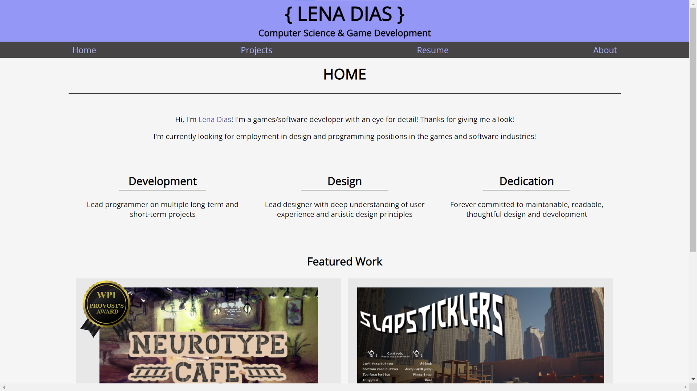

My portfolio site, intended to supplement my resume with the best of my digital projects! And, since this was a significant undertaking, I have included it here as a project I completed. This site was coded by myself entirely through HTML and CSS.
Roles: Programmer, Designer
Languages: HTML, CSS
Tools: Google Chrome, Mozilla Firefox, Sublime Text, GitHub, GitHub pages, Gimp
Team size: 1
Development time: ~2 weeks
Developed: 2023
Before I got started, I researched practices for semantically-meaningful web design to create a quality page. Additional research into mobile-first design made for a site with even wider reach.
Without some personality, any presentation of information can prove uncompelling. I wanted to convey growth, willingness to learn, and my own personality while remaining professional. I also wanted to include some self-reflection through sections such as the "Lessons learned" block on each page (you're reading one right now!) since I believe this is one of my stronger traits! I also themed the header around brackets to allude to C/C++/C#/Java coding, which I am most familiar with!
My previous portfolio website, developed in a rush, was inconsistently formatted, had a lot of issues. This attempt, I took extra time to incorporate what worked about the old one into the new design while spending a lot of time thinking about code structure and ease of reuse for the future; this portfolio should prove significantly more maintainable.
See the home page